NOVAFashion e-commerce website
Modern essentials, a calm place to shop. - Fashion e-commerce website UI/UX case study
A complete fashion storefront, from homepage to order confirmation, designed for five screen sizes.
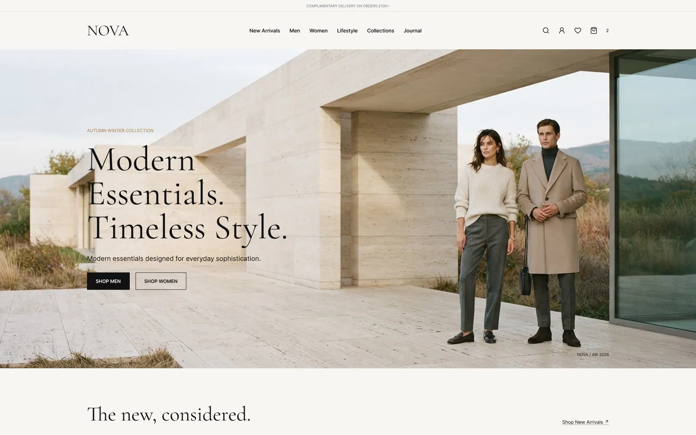
01Overview
A complete fashion storefront, from homepage to order confirmation, designed for five screen sizes.
NOVA is a premium fashion brand built on modern essentials. I designed the complete online store: homepage, collections, product listing, product page, mega menu, cart drawer, checkout, account, order history, journal, brand pages and a design system, with key pages adapted for mobile, tablet, laptop and desktop.
02The challenge
What had to be solved
Premium fashion lives on photography and calm, but stores still have to sell: filters, sizes, delivery and checkout all add noise. The job was to keep the editorial feel without hiding anything a shopper needs.
Design goals
- Let photography lead while keeping prices and actions clear
- Make size, colour and add-to-bag obvious on the product page
- A checkout short enough to finish on a phone
- One system that works on desktop, tablet and mobile
03Process
How I approached it
- Editorial structureLarge imagery, serif headlines and generous spacing carry the brand on every page.
- Shopping essentialsFilters, sorting, quick add, sizes, delivery info and reviews designed for clarity first.
- Checkout in four stepsContact and address, delivery, payment, review: one column, one decision at a time.
- Five breakpointsHomepage, listing, product and checkout redesigned for each size, not just scaled.
04Homepage
Editorial first, still easy to shop.
A full-bleed hero, new arrivals with prices, a lookbook story and collection entry points. Every image leads somewhere useful.
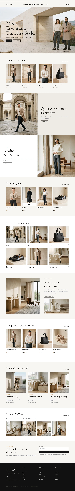
05Product listing and mega menu
Browse by collection, filter without effort.
Collection pages pair an editorial banner with a clean product grid, filters and sorting. The mega menu shows categories and a featured story together.
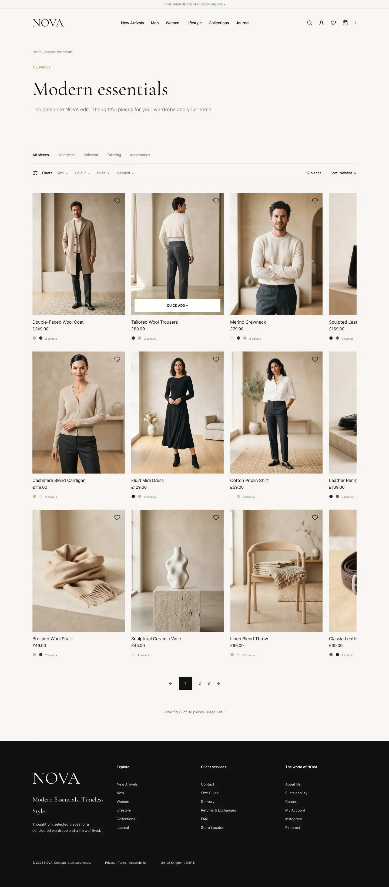
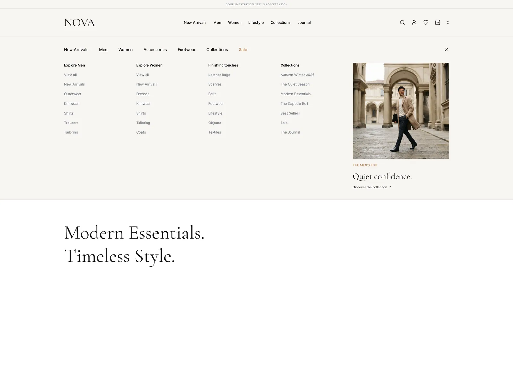
06Product page
Everything needed to say yes.
Large gallery, colour and size selection, add to bag, delivery details, material and care information, and a complete-the-look row.
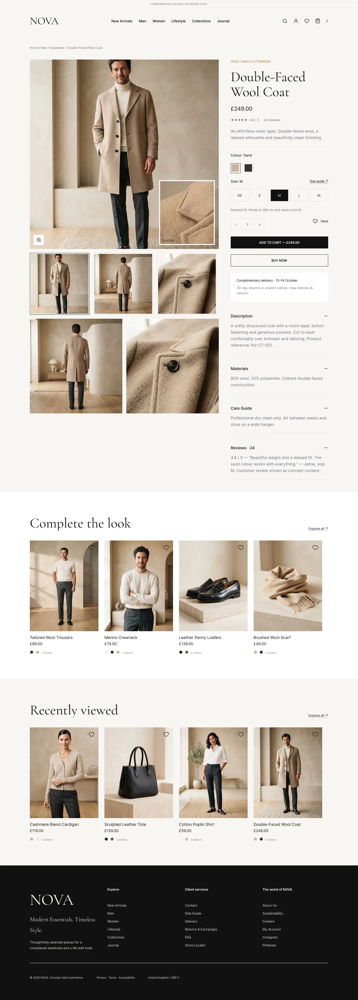
07Cart and checkout
Four steps, one column, no surprises.
A cart drawer keeps shoppers on the page. Checkout shows the order summary throughout and ends with a clear confirmation.
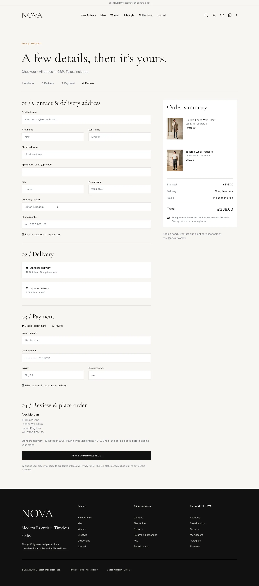
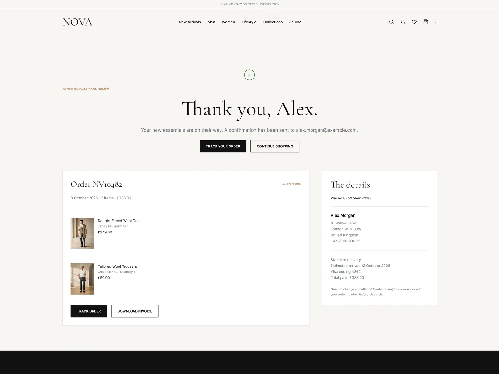
08Responsive design
Designed for every screen, not just resized.
Key pages were designed at 390, 768, 1024, 1440 and 1920 pixels so layout, image crops and navigation work at each size.
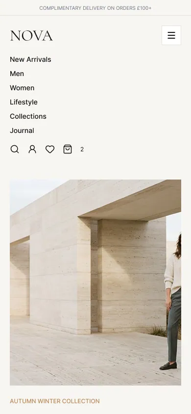
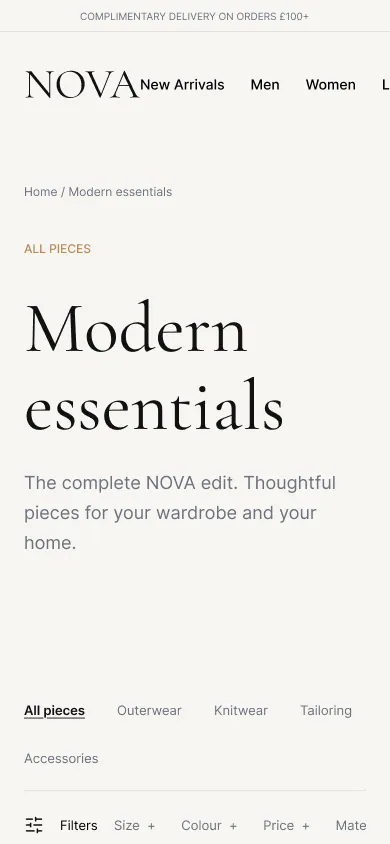
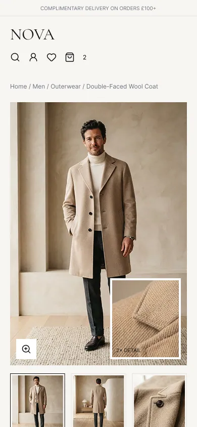
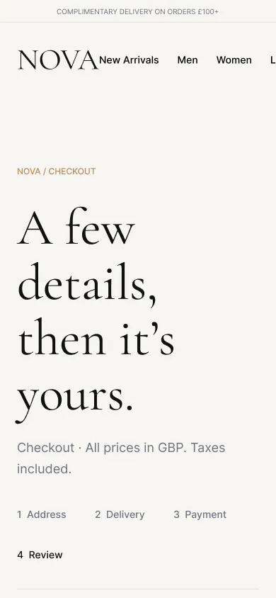
09Journal and account
Content that sells quietly.
Journal articles extend the brand story, and the account area covers orders, addresses and preferences.
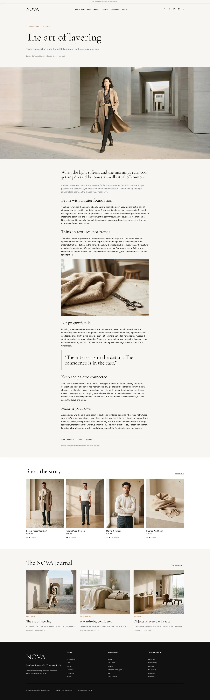
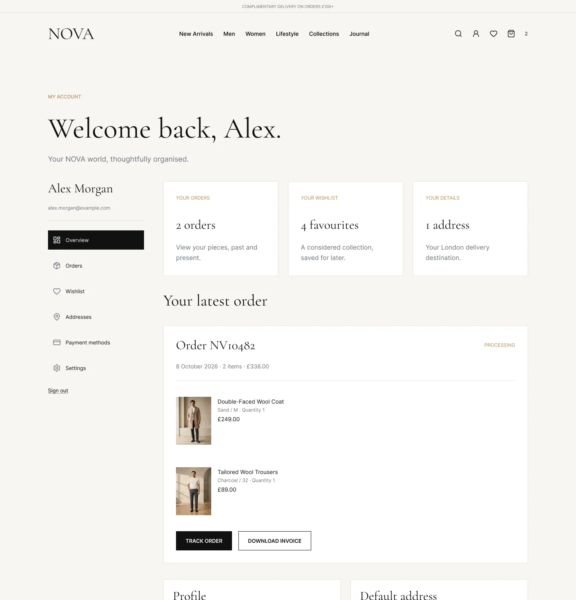
10Design system
The considered design language.
A reference page defines the palette, type scale, buttons, form states and commerce components.
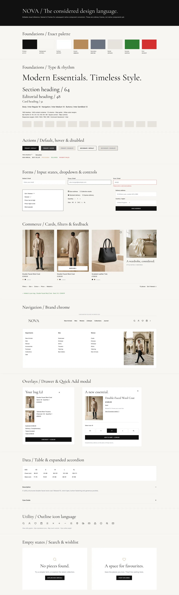
11Decisions
Key design decisions
Serif type carries the brand in headings while all controls use a clean sans-serif for readability.
Adding to bag opens a drawer, so shoppers can keep browsing without losing their place.
The order summary stays in view on desktop and collapses on mobile, so the total is never a surprise.
12Design system
Visual language
Warm stone and sand neutrals, near-black type and a muted terracotta accent. Serif display type for editorial moments and a quiet sans-serif for UI.
TypeSerif display with a clean sans-serif UI
13Outcome
What was delivered
NOVA is a complete, responsive fashion store: more than 25 pages, a four-step checkout and a design system, all keeping the calm, editorial feel the brand needs.
If the project continues, next I would:
- Add size guidance and fit notes
- Design wishlist and back-in-stock alerts
- Run a checkout usability test on mobile
Next project
FlowDeckWork that moves itself.View project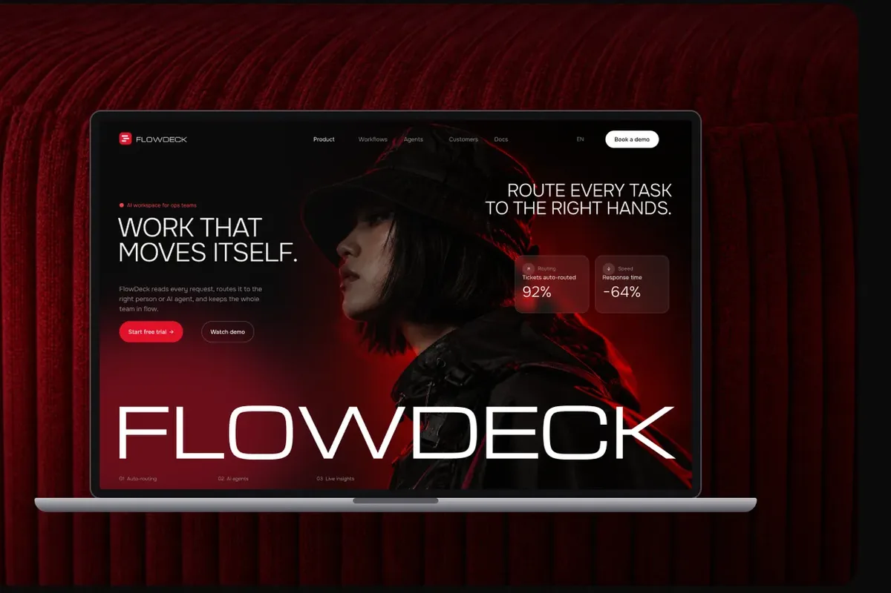